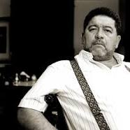

Por: Harold Alvarado Tenorio.Yo nunca aprendí a hacer versos —dice Rubén Darío (Metapa, 1867-1916) en su Autobiografía —. Ello fue en mí orgánico, natural, nacido. Niño precoz,
versificó en una ciudad, León, donde se rimaba por cualquier acontecimiento:
una boda, un deceso, un cumpleaños, una victoria o un fracaso político, la
consagración de un obispo o la toma de empleo. Sus versos de entonces imitan a Zorrilla, Campoamor o a Nuñez de Arce, pero también a Víctor Hugo, el primer poeta francés que se advierte como influencia en su poesía. Son poemas unas veces piadosos otras profanos, nacidos de las contradicciones ideológicas que vivía un niño en una comunidad de fanáticos religiosos y una minoría de liberales y positivistas, artesanos e intelectuales lectores de Rousseau, Montesquieu y Juan Montalvo. Sus temas, los del civilismo
latinoamericano: la fe en el progreso, en la democracia, el odio al clero y la iglesia, y los eternos de la poesía: el amor, el paisaje, las explicaciones de los mundos desconocidos, los otros mundos del alma.
Durante su estancia en Chile Darío publicó Azul. . . Ni los cuentos ni los poemas escritos allí se parecen a los que había publicado en Nicaragua. La lectura de los parnasianos, con Leconte de Lisle a la cabeza, deslumbraron a Darío revelándole la forma escultórica de la estrofa, el colorido de la adjetivación y el brillo de las imágenes precisas. Sus poemas son breves y aun cuando en ellos impere todavía el formalismo clásico, en sus versos y estrofas se siente ya un nuevo espíritu. Ese es el caso de Anagke, la tragedia de una paloma contada en silvas, o de Estival, cuyo asunto es la crueldad del poderoso. Poemas donde Darío se va distanciando del dato concreto para ofrecernos parábolas que interpreten una sociedad o un país, mediante el desvelamiento de sus contradicciones. Sus otros poemas de esta época, los llamados artísticos, magnifican y distorsionan los asuntos, a fin de que sus significados se resuelvan sólo en la conciencia del lector.
En invernales horas, mirad a Carolina.
Medio apelotonada, descansa en el sillón,
envuelta con su abrigo de marta cibelina
y no lejos del fuego que brilla en el salón.
El fino angora blanco junto a ella se reclina,
rozando con su hocico la falda de Alençón,
no lejos de las jarras de porcelana china
que medio oculta un biombo de seda del Japón.
Con sus sutiles filtros la invade un dulce sueño:
entro, sin hacer ruido; dejo mi abrigo gris;
voy a besar su rostro, rosado y halagüeño
como una rosa roja que fuera flor de lis.
Abre los ojos, mírame con su mirar risueño,
y en tanto cae la nieve del cielo de París.
(De invierno)
Juan Valera acertó en sus juicios sobre Azul. . ., al señalar que uno de los rasgos maravillosos de la personalidad del autor era no ser ni clásico ni romántico, ni simbolista, ni decadente sino que lo había revuelto todo sacando de ello la quintaesencia que definía su estilo. Pero lo más importante de sus juicios fue decir que la originalidad aparecía en los cuentos y no en los poemas. El cuento parisién, a lo Catulle Mendés, le había proporcionado un modelo ajustado a las visiones artísticas de su tiempo. El fardo, El rey burgués, o La muerte de la emperatriz de la China recuerdan ese estilo de conversación con la cual se trasmite un chisme; una
escritura que reconoce la existencia de un mundo nuevo que requiere una nueva forma; un artificio que satisfaga la subjetividad de los nuevos lectores. En El fardo los personajes viven en hacinamientos humanos, entre paredes destartaladas, sobre callejuelas inmundas de mujeres perdidas que deambulan en noches sin luz. El rey burgués es símbolo de la inmensa riqueza, del gusto refinado; un mercader del arte que ignora al poeta y lo
abandona a la muerte, en una noche de invierno, mientras él piensa en el Ideal y el día que viene. Un mundo pesimista y una necesidad de acercarse a los abismos de lo desconocido, para crear nuevas mitologías, son el retrato que hace de su tiempo quien creía que el dinero debe ser exclusivamente usado por los artistas.
Un cambio vertiginoso en el crecimiento de las ciudades se produjo en el último cuarto de siglo del XIX. Según Richard Morse[1], la población en Santiago pasó de los ciento treinta a los doscientos cincuenta mil habitantes, mientras la de Buenos Aires alcanzó los ochocientos cincuenta mil. En esta populosa ciudad desembarcó Darío el 13 de agosto de 1893. Un nuevo tipo de hombre de la calle y de negocios, de hogar y de burdel, habitaba la primera Cosmópolis hispanoamericana. Aventureros que buscaban, como afirma José Luis Romero[2], el ascenso social y económico con apremio, casi con desesperación, generalmente de clase media y sin mucho dinero, pero con una singular capacidad para descubrir dónde estaba escondida, cada día, la gran oportunidad.
«Buenos Aires modernísimo —escribiría Darío en 1896[3]— cosmopolita y enorme, en grandeza creciente, lleno de fuerzas, vicios y virtudes, culto y polígloto, mitad trabajador, mitad muelle y sibarita, más europeo que americano, por no decir todo europeo».
La Argentina de Darío, con su capital donde no habían cien personas que comprasen un libro, pero que editaba el periódico más importante del continente, era el resultado de una revolución en los medios de producción.
Entre 1860 y 1913 se invirtieron allí 10.000 millones de dólares, el 33% de las inversiones extranjeras en el área. En ese mismo lapso ingresaron al país 3.300.000 personas que se enrolaron en la economía agropecuaria; en
1887 sus vías férreas alcanzaban los 6.200 kilómetros y en 1900 totalizaba los 16.600, mientras las exportaciones pasaron de los 260 millones de dólares en 1875 a los 460 millones en 1900[4].
1896 es el año de la apoteosis de Darío: se publican Los raros y Prosas profanas y otros poemas. Los artículos recopilados en el primer libro habían sido publicados en La Nación, que desde 1888 contaba a Darío como uno de sus corresponsales. Están dedicados a figuras literarias que llamaban la atención de los modernistas o eran sus predilectos. Camile Mauclair, Edgar Allan Poe, Leconte de Lisle, Paul Verlaine, el conde Matías Augusto de
Villiers de L´Isle Adam, León Bloy, Jean Ripechin, Jean Moreas, Rachilde, George D´Esparbés, Augusto de Armas, Laurent Tailhade, Fray Domenico Cavalca, Eduardo Dubus, Théodore Hannon, el conde Lautréamont, Paul Adam, Max Nordeau, Ibsen, José Martí y Eugenio de Castro forman esta galería y vademécum de la nueva literatura. Cada reseña de la vida y las obras de los autores es un canto de admiración, con juicios ciertos y valoraciones exactas sobre tan variado conjunto. Es una obra que resume la lucha de Darío por ventilar, con los aires de la nueva generación, el enrarecido ambiente romanticoide de América. Las frases escritas sobre Verlaine parecen un retrato de si mismo:
Verlaine fue un hijo desdichado de Adán, en el que la herencia paterna apareció con mayor fuerza que en los demás. De los tres Enemigos, quien menos mal le hizo fue el Mundo. El Demonio le atacaba; se defendía de él,
como podía, con el escudo de la plegaria. La Carne sí, fue invencible e implacable. Raras veces ha mordido cerebro humano con más furia y ponzoña la serpiente del Sexo. Su cuerpo era la lira del pecado. Era un eterno
prisionero del deseo. Al andar, hubiera podido buscarse en su huella, lo hendido del pie. Se extraña uno no ver sobre su frente los dos cuernecillos, puesto que en sus ojos podían verse aún pasar las visiones de las blancas
ninfas, y en sus labios, antiguos conocidos de la flauta, solía aparecer el rictus del egipán. Como el sátiro de Hugo, hubiera dicho a la desnuda Venus, en el resplandor del monte sagrado: Viens nous en!… Y ese carnal pagano aumentaba su lujuria primitiva y natural a medida que acrecía su concepción católica de la culpa.
Prosas profanas, está precedido por un prólogo donde Darío proclama, entre otras preferencias, su amor por la novedad a condición de que sea inactual; exalta el yo desdeñando las mayorías; declara la supremacía del sueño sobre la vigilia y la del arte sobre la realidad, pregonando su horror por el progreso, la técnica, el presente y la democracia: … vereís en mis versos princesas, reyes, cosas imperiales, visiones de paises lejanos o imposibles; ¡qué quereís!, yo detesto la vida y el tiempo en que me tocó nacer; y a un presidente de la República no podré saludarle en el idioma en que te cantara a ti, ¡oh Halagabal!, de cuya corte — oro, seda, mármol — me acuerdo en sueños…. (Si hay poesía en nuestra América, ella está en las cosas viejas: en Palenke y Utlatán, en el indio legendario, y en el inca sensual y fino, y en el gran Moctezuma de la silla de oro. Lo demás es tuyo, demócrata Walt Whitman.)
Darío recoge en este volumen los motivos que más le dieron prestigio: la nostalgia de los parques del setecientos, los abates galantes, las marquesas crueles, las elegancias a lo Watteau, la princesa que aguarda al feliz caballero que la adora sin verla y viene a encenderle los labios con un beso de amor; los efebos criminales parecidos a los satanes verlenianos, los cisnes simbólicos y elegantes. La búsqueda de la expresión se hace en base a una musicalidad, que imprime a las palabras, más allá de su sentido lógico, grandes sugerencias. El helenismo, a lo parnasiano, está expresado en idilios de espléndido y artificioso virtuosismo donde lo pintoresco se funde con relieves escultóricos y las evocaciones, clasicistas, están unidas a
imágenes españolas de gran colorido, precioso y refinado. Pero es también, sustancialmente, un prodigioso repertorio de ritmos, formas, colores y sensaciones. Sus innovaciones métricas y verbales son deslumbrantes. Pedro Henríquez Ureña[5] , en un comentario a la obra de Darío, en 1905, enumera, entre otras, las siguientes: resurrección del endecasílabo anapéstico y el provenzal; ruptura de la división rígida de los hemistiquios de alejandrino; auge del eneasílabo y el dodecasílabo; cambios de acentuación; invención de versos largos; mezcla de distintas medidas con una misma base silábica, ternaria o cuaternaria; versos amétricos y retorno a las formas tradicionales del verso hispánico.
El placer, sostiene Octavio Paz[6] , es el tema central de Prosas profanas:
La mujer lo fascina. Es colina, tigre, yedra, mar, paloma; está vestida de agua y de fuego y su desnudez misma es vestidura. Es un surtidor de imágenes: en el lecho se “vuelve gata que se encorva” y al desatar sus
trenzas asoman, bajo la camisa, “dos cisnes de negros cuellos”. Es la encarnación de la “otra” religión: “Sonámbula con alma de Eloísa, en ella hay la sagrada frecuencia del altar”. Es la presencia sensible de esa
totalidad única y plural en la que se funden la historia y la naturaleza:
…fatal, cosmopolita,
universal, inmensa, única, sola
y todas; misteriosa y erudita; ámame mar y nube, espuma y ola.
En abril de l900 y por encargo de La Nación Darío llegó a París para cubrir los eventos de la Exposición Universal. Allí viviría por algunos años. La Ciudad Luz arde en esplendor. Sus crónicas sobre el acontecimiento son juicios valorativos sobre los diferentes sectores y en especial del artístico, como los que emite sobre la muestra de Rodin, quien, para Darío, no es un solo creador sino dos: el inventor de la belleza, clásico y
comprensible y el otro, surgido de las mismas fuentes de la naturaleza, el que ha esculpido el Pensador. Pero su entusiasmo por el mundo europeo va decayendo poco a poco, a medida que confirma la ruina de unas sociedades que realizarían las mas horrendas guerras del mundo moderno. El uno de enero de 1901, en Reflexiones sobre el Año Nuevo parisiense, aseguró:
No hay mayor contraste que el de esta riqueza y placer insolentes, y este frío en que tanto pobre muere y tanto crimen se comete, de manera que las bombas que de cuando en cuando suenan en el trágico y aislado sport de
algunos pobres locos, vienen a resultar ridículas e inexplicables. Esto no se acabará sino con un enorme movimiento, con aquel movimiento que presentía Enrique Heine, “ante el cual la Revolución Francesa será un dulce idilio.
Son estos los años cuando Darío toma conciencia clara de ser latinoamericano. Junto a los hermanos Cuervo, Vargas Vila, Blanco Fombona, Díaz Rodriguez, Tamayo, Nervo o Ugarte y Estrada había descubierto que el
París y la vida parisina que tanto amaron les ignoraba. Salutación del optimista, escrito para un acto en el Ateneo madrileño, organizado por la Unión Iberoamericana, es una premonición del caos que estaba a las puertas
de la historia:
Siéntense sordos ímpetus en las entrañas del mundo,
la inminencia de algo fatal hoy conmueve la tierra;
fuertes colosos caen, se desbandan bicéfalas águilas,
y algo se inicia como vasto social cataclismo
sobre la faz del orbe.
Cantos de vida y esperanza es el más importante de sus libros. En el prólogo enfatiza en la continuidad de su tarea realizada e insiste en el carácter personal de sus hallazgos. Aparte de sus novedades formales, es un
retorno a las preocupaciones y actitudes anteriores a Azul…: la política, el amor por lo hispano y el recelo ante los Estados Unidos. Cyrano en España, Retratos, Trébol, Un soneto a Cervantes, A Goya, y Letanía a Nuestro
Señor Don Quijote intentan una revalidación de la cultura española. Su visión del pasado y el presente abarca las civilizaciones abolidas, los conquistadores y los héroes de las gestas independentistas. Ve el peligro
que representan los Estados Unidos como un conflicto entre civilizaciones:
la norteaméricana es joven, agresiva, nórdica, pragmática, protestante; la nuestra, heredera de dos antiguas civilizaciones en descenso. En A Roosevelt, al optimismo yanqui, opone el alma de la América Hispana que
sueña, vibra y ama. Son poemas que buscan las razones de una esperanza en nuestro futuro. Su otra preocupación es la religiosa. El nuevo Ideal está asociado a la fe, como en Los tres reyes magos o Canto de esperanza. Ante el poderío norteaméricano y el apocalipsis inminente, fe y poesía son caminos
para acercarse al misterio, a lo inefable del porvenir:
¡Torres de Dios! ¡Poetas!
¡Pararrayos celestes
que resistís las duras tempestades,
como crestas escuetas,
como picos agrestes,
rompeolas de las eternidades!
La mágica esperanza anuncia un día
en que sobre la roca de armonía
expirará la pérfida sirena.
¡Esperad, esperemos todavía!
(Cantos)
En la obra y la vida de Darío se resume todo el proceso del Modernismo, y es uno de los más vivos testimonios de las preocupaciones del alma hispánica en una época cuando nuevas generaciones de latinoamericanos no se encontraban a gusto bajo el tutelaje de las culturas dominantes en Europa y América. Desde
el repudio a la realidad y su inicial refugio en mundos mitológicos y exóticos, hasta el reencuentro con las preocupaciones sociales y la formulación de las eternas preguntas sobre el arte, el placer, el amor, el
tiempo, la vida, la muerte o la religión, hay en él un poeta que comprendió, a cabalidad y con la imaginación, la hora y el espacio que le tocó vivir.
Harold Alvarado Tenorio
_____
[1]The Urban Development of Latin America 1750-1920, Stanford, 1971.
[2]Latinoamérica: las ciudades y las ideas, México, 1976, pg., 264
[3]Introducción a Nosotros, de Roberto J. Payró, en Escritos inéditos de
Rubén Darío,New York, 1938, pg.,101
[4]Ver: El positivismo y el progreso material (1870-1890), en Historia
General de América, de Francisco Morales Padrón, tomo IV, pgs., 395-421,
Madrid, 1982.
[5]Rubén Darío, en Obra crítica, México, 1960, pgs., 97-100.
[6]El caracol y la sirena, en Cuadrivio, México, 1972, pg., 41